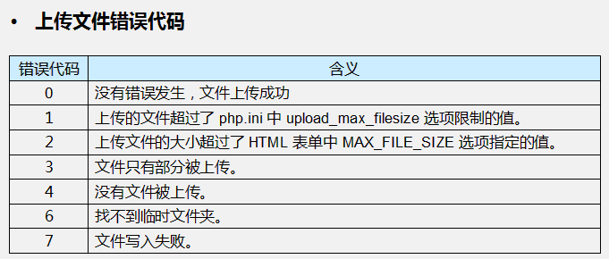

PHP4http-day15（GD2、文件上传）
一、GD2
1、开启GD2----------extension=php_gd2.dll
2、创建图像的大致步骤
3、画布坐标系说明：Y轴向下
1创建图像画布和空画布
1.1创建画布(基于现有图像创建)
描述：由文件或 URL 创建一个新图象，返回：执行成功返回资源(画布)，执行失败返回FALSE。
resource imagecreatefromjpeg ( string $filename );，与imagecreatefromgif( ) 、imagecreatefrompng( )语法一模一样
1.2创建真彩色空画布：新建一个真彩色图像，是24位颜色，1677万种颜色。如：RGB(255,0,0)
1.3创建基于windows调色板的空画布
$filename="./images/01.jpg"; $img=imagecreatefromjpeg($filename);
#var_dump($img);//resource(3) of type (gd)
header('Content-type:image/jpeg');//告诉浏览器以图片形式打开
imagejpeg($img);
2、销毁图像：释放资源、释放内存
3、为图像分配颜色(调色)
参数：$image是画布。颜色：可以用10进制或16进制表示每一位取值 ，如：红色：(255,0,0)，红色：(0xFF,0x00,0x00)
$alpha为透明度，范围是0-127， 127为全透明。
3.1分配普通颜色 int imagecolorallocate
3.2为一幅图像分配颜色和透明度 imagecolorallocatealpha
语法：int imagecolorallocatealpha ( resource $image , int $red , int $green , int $blue , int $alpha )；
4、区域填充颜色
描述：区域填充(封闭的空间)，如：矩形、圆、多边形等。imagefill($img,0,0,$reD);//给真彩色画布填充颜色
语法：bool imagefill ( resource $image , int $x , int $y , int $color )
参数：、$x、$y填充的起点坐标。画布坐标只要不超出画布大小都可。
5、输出图像
描述：输出图象到浏览器或文件，两者区别1是否屏蔽浏览器输出图像格式声明header('Content-type:image/jpeg');2imagejpeg第二参数有没有
语法：bool imagejpeg ( resource $image [, string $filename [, int $quality ]] );
提示：imagegif()、imagepng()语法类似，但只有imagejpeg()才有第3个参数。想用第3个参数，则$filename用null代替。
6、水平画一行字符串--例 $font=5; $str="hangzhou"; imagestring($img, $font, 50, 50, $str, $reD);
语法：bool imagestring ( resource $image , int $font , int $x , int $y , string $s , int $col )；
7、在图像上写入一行TTF字体的文本
语法：array imagettftext ( resource $image,float $size,float $angle,int $x,int $y,int $color,string $fontfile,string $text )
$filename="./images/a.png"; //图片上加元宵节快乐
$img=imagecreatefrompng($filename);
// var_dump($img);//resource(3) of type (gd)
$color = imagecolorallocate($img, 255, 0, 0);
$font=50;
$fontWidth=imagefontwidth($font);
$fontHeight=imagefontwidth($font);
$str='元宵节快乐';
$c=$fontWidth*strlen($str);
$x=(imagesx($img)-$c-100)*0.5;
$y=(imagesy($img)-$fontHeight)*0.5;
imagettftext($img, $font, 25, $x, $y, $color, './images/STXINGKA.ttf', $str);
imagepng($img,"./b.png");
header('Content-type:image/jpeg');//告诉浏览器以图片形式打开
imagejpeg($img);
imagedestroy($img);
8、获取图像相关信息
8.1取得画布宽度和高度int imagesx ( resource $image ) 或 int imagesy( resource $image )5，6，7，8，9
8.2取得字体宽度和高度int imagefontwidth( int $font ) 或 int imagefontheight( int $font )其中$font就是1-5号字。8,13,13,16,15
8.3取得图像相关信息getimagesize：语法：array getimagesize ( string $filename )
返回值Array([0] => 1024宽px [1] => 685高 [2] => 2…… // 图像类型的标记：1 = GIF，2 = JPG，3 = PNG……
9、重新采样拷贝部分图像并调整大小
语法：bool imagecopyresampled ( resource $dst_image , resource $src_image , int $dst_x , int $dst_y , int $src_x , int $src_y , int $dst_w , int $dst_h , int $src_w , int $src_h );目标图像，原图像
$arr=range('A','z'); shuffle($arr);打乱排序 echo mt_rand(0,2);随机 array_rand() $arr=array_merge($arr1,$arr2);合并
画直线imageline(image, x1, y1, x2, y2, color);
画曲线imagearc(image, cx, cy, width, height, start, end, color);
//实现图像的等比缩放
function getImagecopyresampled($fileName, $dst_w=100, $dst_h=false){
$imgFun = array('', 'gif', 'jpeg', 'png');
$imageInfo = getimagesize($fileName);// 获取旧图像的宽高
$src_w = $imageInfo[0];
$src_h = $imageInfo[1]; // 旧图像高度
if(!$dst_h) $dst_h = $src_h/$src_w*$dst_w;// 新图像高度，如果$dst_h没有被赋值，则按照$dst_w进行等比缩放
$funName = 'imagecreatefrom'.$imgFun[$imageInfo[2]];// 基于旧图像创建画布
$src_image = $funName($fileName);// 生成对应的函数名
$dst_image = imagecreatetruecolor($dst_w, $dst_h); // 创建目标图像
imagecopyresampled($dst_image, $src_image, 0, 0, 0, 0, $dst_w, $dst_h, $src_w, $src_h);
$tmpName = explode('/', $fileName);// 将旧图像的路径按照/分解
$newName = array_pop($tmpName);// 弹出图像的名称并赋值给$newName
$newName = $dst_w.'_'.$newName;// 给$newName 拼接倍率
array_push($tmpName, $newName); // 拼接新的路径
$tmpName = implode('/', $tmpName);
$funName = 'image'.$imgFun[$imageInfo[2]];// 生成对应的函数名
$funName($dst_image, $tmpName, 100);// 保存新图像
imagedestroy($dst_image);
imagedestroy($src_image);
return $tmpName;
}
二、上传文件原理
超全局数组$_FILES
Array
( [img] => Array
( [name] => img01.jpg
[type] => image/jpeg //上传文件的MIME类型，易被伪造；
[tmp_name]=> C:\Windows\Temp\php7583.tmp //上传到服务器的临时二进制文件数据
[error]=> 0 //上传文件的错误编号。
[size]=> 93634
)
)
上传文件的信息和数据，都保存在$_FILES全局数组中，不在$_POST中。$_POST中是普通表单元素的信息。

2、修改上传文件的临时目录upload_tmp_dir=绝对路径
3、判断文件是否是通过HTTP POST上传的语法：bool is_uploaded_file ( string $filename )
4、将上传的文件移动到新位置语法：bool move_uploaded_file ( string $filename , string $destination )
5、生成唯一ID目标文件名
语法：string uniqid ([ string $prefix = "" [, bool $more_entropy = false ]] )前缀或子随机数，
省略则为13位随机数。例：echo "<br>带后缀：".unique（"S_",true）;//S_574ea2066121c6.92922561
6、上传文件大小判断：
(1)修改php.ini单个文件大小upload_max_filesize=80M
(2)在表单准中使用隐藏域来存储文件最大允许上传的值 提示：要写在<input type='file'>这行前才有效。
例：<input type='hidden' name='max_file_size' value='2*1024*1024'>
(3)在服务器端也要进行大小判断：以防绕过客户端限制上传文件
例：if ($_FILES['uploadFile']['size']>50*1024) {exit("上传文件不能超过50kb");}
7、利用php_fileinfo.dll对文件MIME类型进行严格检查
可以使用第三方扩展 php_fileinfo.dll 来对上传文件进的MIME类型进行检查。
1、开启php_fileinfo.dll---》extension=php_fileinfo.dll
2、finfo_open()：创建一个检查MIME类型的资源.
3、finfo_file()：返回指定文件的信息（字符集、MIME类型）
上传文件八步骤：
第一步：制作HTML 表单
上传方式method 的值必须为 post
表单编码格式：如果要上传附件，表单编码格式必须为enctype="multipart/form-data"
MAX_FILE_SIZE 的值用来限制用户上传文件的大小。
它可以避免我们在花时间等待上传文件之后才发现该文件太大。
1、该值必须设置在file控件之前才会起作用。
2、该值必须是一个最终值，不能是个运算式，因为表单数据都是字符串。例如：可以是1024，不可以是512*2
表单控件：<input type="file">
第二步：接收上传数据$_FILES
上传文件应该使用$_FILES来接收，接收到的数据如下：
[name]、[type]、[tmp_name]、[error]、[size] => 上传文件的大小
第三步：判断系统错误（详见上传文件错误代码）
第四步：处理逻辑需要
文件类型限制：通过判断上传文件的扩展名，来确定上传文件的类型是否符合要求
文件大小限制：通过判断 $_FILES['size' ]的大小，来判断上传文件的大小是否符合要求
第五步：处理安全需要
MIME类型检测：我们需要获取文件的真实MIME类型，防止文件是病毒文件
第六步：生成随机文件名
我们必须为用户生成一个永不重复的文件名，防止用户之间的上传文件被覆盖
第七步：拼接文件路径
拼接完整的路径，以便下一步文件移动。
工作中，存储文件夹，一般是以年月日命名，方便我们后续的管理和 维护
第八步：移动上传文件：move_upload_files()